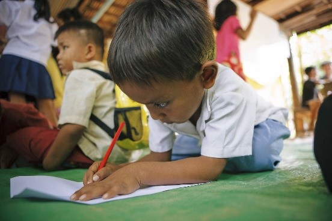

| Attend classes conducted by mentors | Attend classes conducted by high school students | Conduct classes for elementary school students | |
|---|---|---|---|
| 1st-4th grades | ✓ | ||
| 5th-8th grades | ✓ | ✓ | |
| 9th-12th grades | ✓ | ✓ |
"Sci.calls' Logic" is a special program which was designed specifically for the purpose of enhancing the quality of education all over the globe, handing out the opportunity of making best out of their study process to students (pupils).
The process is conducted in the above shown way. As depicted in the table above, a group of students are chosen from 12th, 11th, 10th and 9th grades to give lessons to 8th, 7th, 6th and 5th grade students, respectively.
We believe that both parties are beneficiaries in this specific case. To be precise, the 9th grade, sophomore, junior and senior students benefit from this process as well as the elementary and middle school ones. They get to revise their knowledge and further cement it in their memory. Plus, they are handed an abundance of opportunities in exchange, that would be excessively useful in their studies as well as day to day life. On the other hand, the elementary and middle school students get a chance to gain some experience from the older students, while acquiring new knowledge.